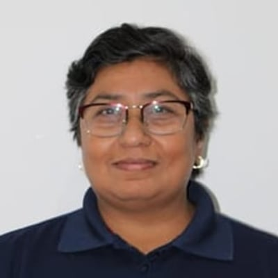
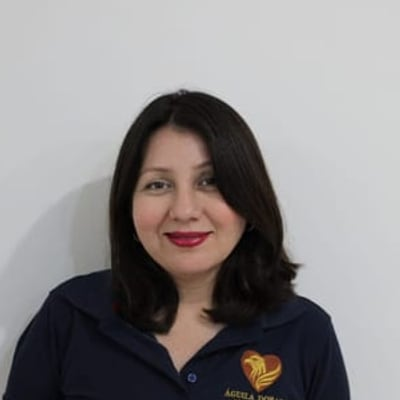
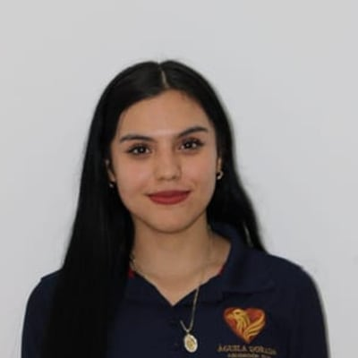
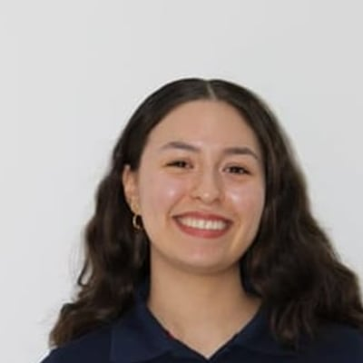
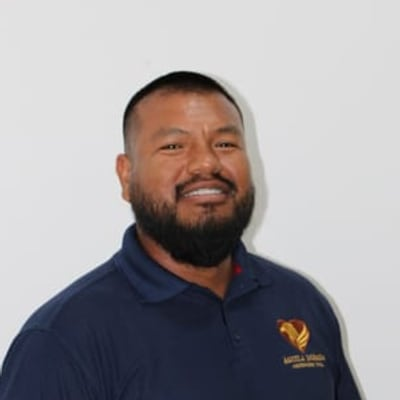
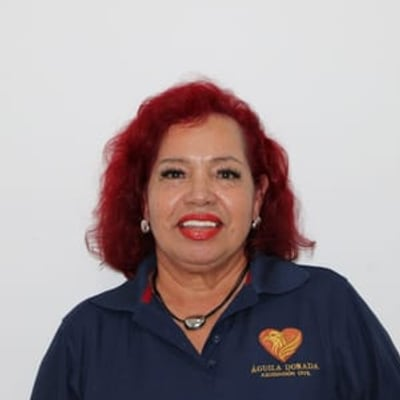

Lic. Maricela Cázarez Zamora
Dirección y Depto. Educativo
Marca el rumbo de la asociación y la representa ante instituciones.
Gustos personalesLa lectura, los viajes y el tiempo con los suyos.
Un equipo multidisciplinario que sostiene la atención psicológica, la educación emocional y el trabajo comunitario en Culiacán y sus alrededores. Aquí puedes conocer a quienes fundaron el proyecto y al equipo que acompaña cada proceso.

Dirección y Depto. Educativo
Marca el rumbo de la asociación y la representa ante instituciones.
Gustos personalesLa lectura, los viajes y el tiempo con los suyos.

Contraloría
Vigila el uso transparente de los recursos y la rendición de cuentas.
Gustos personalesEl café con buena charla, la música y los lugares nuevos.
Administración y Voluntariado
Lleva la administración diaria y acompaña a quienes se suman como voluntarios.
Gustos personalesEl anime, la comida japonesa y el deporte.

Secretaría y Difusión
Primer contacto de quien se acerca. Lleva la agenda y la difusión en redes.
Gustos personalesLos días de playa, los viajes y salir a bailar.

Depto. Cultural y de Psicología
Enlaza al equipo terapéutico con los talleres y eventos culturales.
Gustos personalesEstar en la naturaleza, la música y el cine.

Depto. Asistencial
Coordina las jornadas de apoyo a familias, de la recolección a la entrega.
Gustos personalesEl cine, los días de playa y andar en moto.

Depto. Asistencial
Organiza a las familias beneficiarias y da seguimiento a cada caso.
Gustos personalesUna buena comida, la música y los viajes.
La Lic. Maricela Cázarez, psicóloga con cédula profesional, encabeza la atención psicológica; el resto del equipo brinda orientación psicológica en calidad de pasantes, con supervisión profesional.
Psicología clínica
Cédula profesional 8820269
Atiende terapia individual y encabeza la atención psicológica, supervisando al equipo de orientación.
Orientación psicológica
Pasante en práctica supervisada
Acompaña procesos de orientación psicológica bajo supervisión profesional.
Orientación psicológica
Pasante en práctica supervisada
Acompaña procesos de orientación psicológica bajo supervisión profesional.
Si quieres acompañar procesos, apoyar talleres o compartir tus habilidades, hay un lugar para ti en Águila Dorada.